チュートリアル：非線形曲線フィット
Fitting-NLFit-Basic
サマリー
Originで非線形フィットを行うには、非線形フィット(NLフィット)ダイアログボックスを使用します。NLフィットツールは200以上の組込関数があります。
必要なOriginのバージョン: Origin 8.5
学習する項目
- 組込関数でフィットするには
- 再計算してNLフィットの設定を変更するには
- ユーザ定義関数を定義するには
組込関数を使ってデータにフィットするには
- ファイル:開く...をクリックして\Samples\Curve Fittingフォルダから、Intro_to_Nonlinear
Curve Fit Tool.opjを開き、プロジェクトエクスプローラウィンドウで組込関数を選びます。
- Graph1をアクティブにして、解析: 非線形曲線フィットを選び、NLFitダイアログを開きます。関数のドロップダウンリストからGaussを選択します。
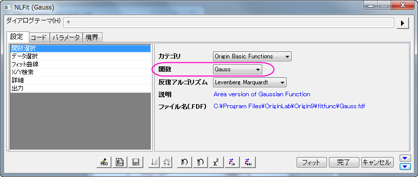
- 組み込み関数にはパラメータの自動初期化コードが組み込まれているので、パラメータタブには、初期値があらかじめ入力されています。
残差タブでは、現在の残差を確認できます。この図から現在のフィットがうまくいっているかどうかを確認できます。
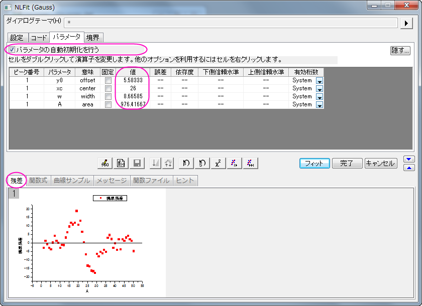
- パラメータの初期値で作成されたフィット曲線がグラフに表示されます。
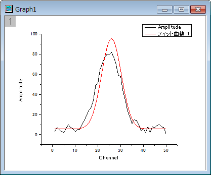
- 収束までフィットボタン
 をクリックすると、メッセージタブには反復回数、自由度あたりのカイ二乗、R二乗値が表示されます。
をクリックすると、メッセージタブには反復回数、自由度あたりのカイ二乗、R二乗値が表示されます。
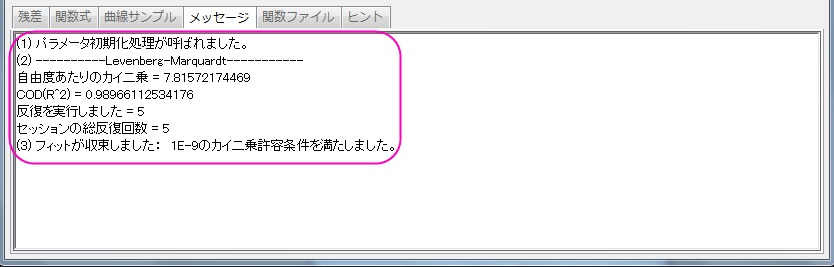
- OKボタンをクリックします。パラメータ値やフィット統計を表示したFitNL1レポートを作成します。
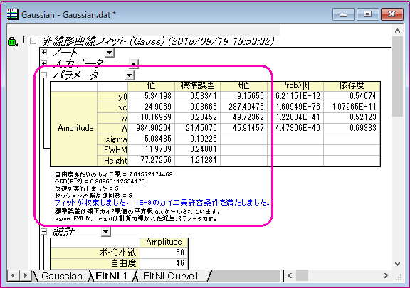
- 非線形曲線フィットダイアログを再度開きます。グラフの左上の角にある緑の錠前アイコンをクリックして、パラメータの変更を選択し、ダイアログボックスを開きます。
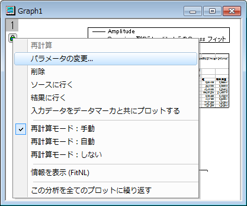
- パラメータタブを開き、xc値に25 (セルをダブルクリックして編集します)固定にチェックを入れます。
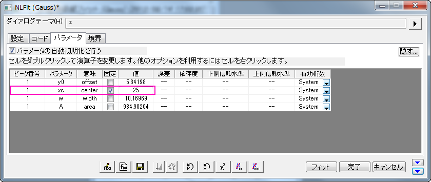
- 収束までフィットボタンをクリックしてOKボタンを押します。
- レポートシートでは、パラメータが固定されたので、xcの誤差値はxcが25から0なったことがわかります。
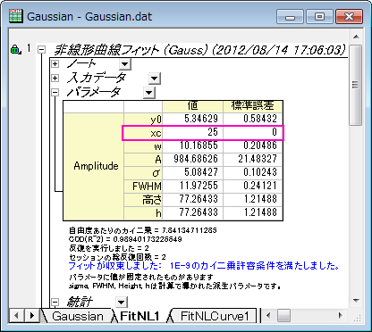
ユーザ定義関数を定義する
このセクションでは、
フィット関数、y=y0+a*exp(-b*x)を定義し、その関数を使ったフィットを行います。
- プロジェクトエクスプローラを開きます。メニューのツール: フィット関数ビルダ...を選び、フィット関数ビルダダイアログを開きます。
- 処理のゴールページで新しい関数の作成をクリックして、進むボタンをクリックして関数名と関数形式のページを開きます。
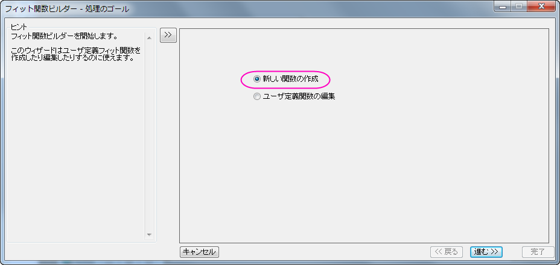
- 関数名と関数形式ページでは関数の名前と関数の種類を選択します。この関数はデフォルトではUser Definedのカテゴリになります。
- 関数名をMyFunctionと設定します。
- 関数形式リストから算術式を選びます。ヒントは左側のパネルで見る事ができます。
- 進むをクリックし、変数とパラメータページに移動します。
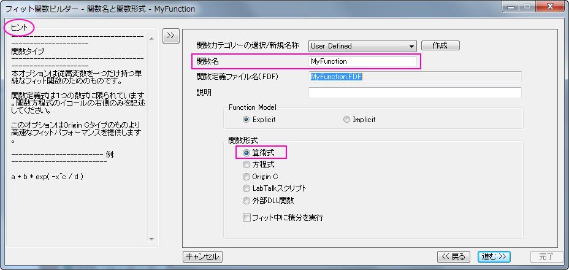
- 変数とパラメータページでは、独立変数にx、従属変数にyが設定されている事を確認してください。パラメータのテキストボックスにy0,
a, bと入力します。進むボタンをクリックします。
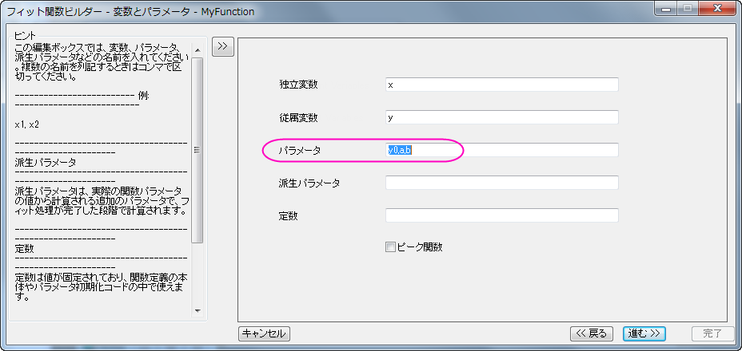
- 式形式の関数ページで、次の操作をします。
- パラメータの初期値を設定します。
- 関数内容の編集ボックスにはy0+a*exp(-b*x)と入力します。
- 関数の有効性をチェックするために、クイックチェックを使用してください。独立変数xに値の入力したら、評価ボタン
 ,クリックして、従属変数yを推定して関数の正当性を評価します。
,クリックして、従属変数yを推定して関数の正当性を評価します。
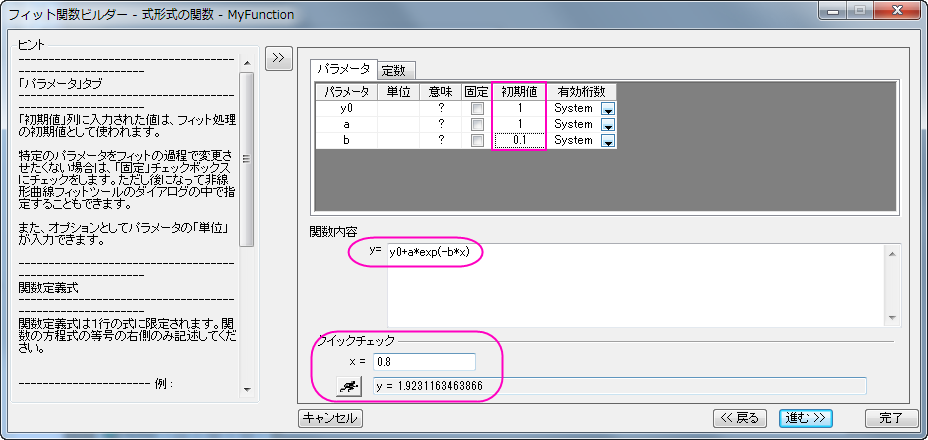
- 完了ボタンをクリックして定義を修了します。
- プロジェクトエクスプローラを開き(表示: プロジェクトエクスプローラ)、User-Defined Functionフォルダを開きます。
- [Book1]Sheet1の列Aと列Bをハイライトして、解析: フィット: 非線形曲線フィットと操作してNLFitダイアログを開きます。設定タブの関数選択ページでは、UserDefindeカテゴリに保存したMyFunctionを選択します。
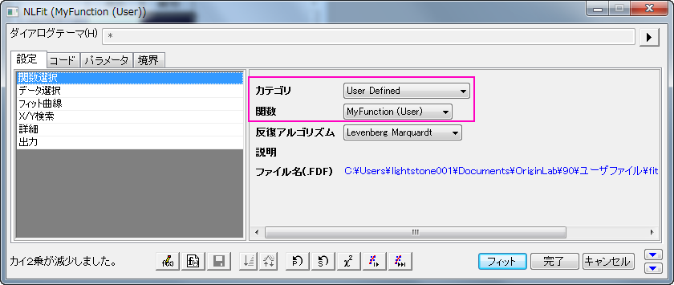
- 1回反復ボタンをクリックして、パラメータ値の変化とフィット曲線の変化を見る事ができます。
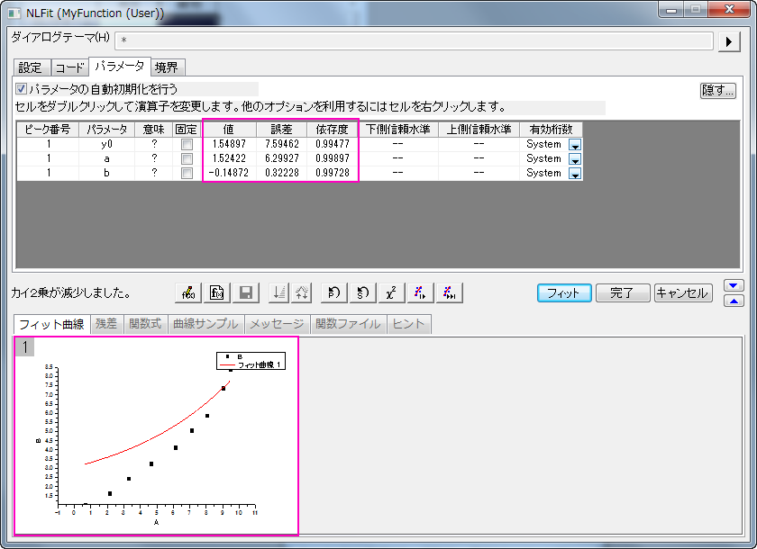
- そして収束までフィットボタンをクリックします。
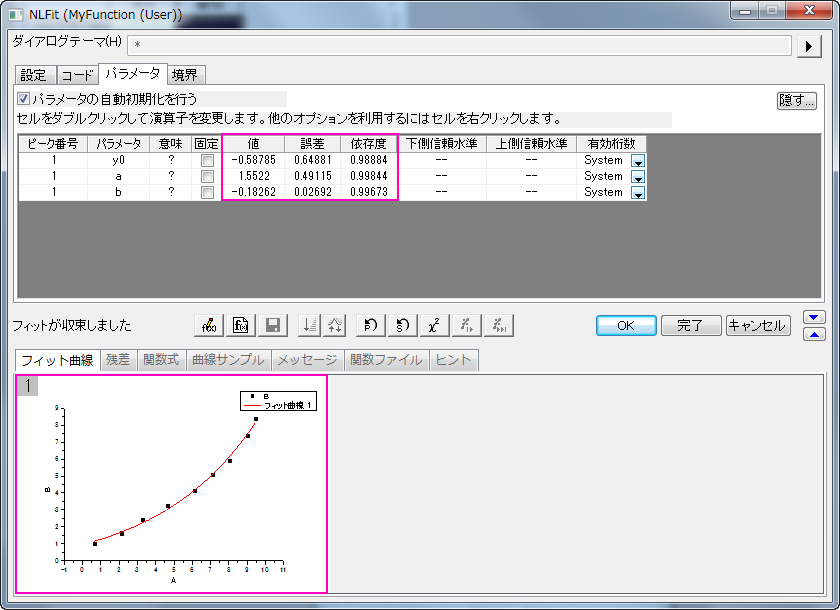
- OKボタンをクリックするとFitNL1レポートシートにパラメータ値やフィット統計がフィット結果として表示されます。これで、最適なパラメータとフィット統計を調査します。